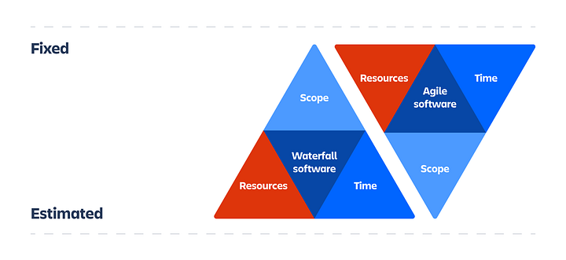

Importance of Agile Scope Management
By Kaleb Dean
In an agile project, flexibility and change should be on the forefront of your mind as a team lead. Requirements and specifications will constantly be modified by either your client or user base. While these suggestions are necessary for improving your project, some of them may not be possible due to time, cost, and resource constraints. Project scope management helps to limit the scale of the project to stay within the bounds of time and resources.
All projects suffer from scope creep, where the desired features and possibly functions increase over the course of development. Scope creep has caused many projects to fail. Not because the team was not working hard enough or because the initial scope was too grand, but because the scope increased to an unsustainable margin given the project’s time and budget constraints. Due to the flexible nature of agile methodology, agile projects suffer the most from scope creep. The best countermeasure for scope creep is very deliberate scope creation during the planning phase and scope management during the development phase.
Scope in project management is typically made up of several components:
- The goals to be accomplished by the project’s creation
- Deliverables of the project
- Features to be implemented by the project
- Functions of the project
- Deadlines set by the project’s client
- Budget for costs associated with the project’s development
Goals
The goal or goals of a project are what the organization is setting out to achieve with its completion. This can be to save the business time or money in its ongoing processes, creating a product to make some task more convenient for the user base, or in the case of this website, to provide project managers with information about agile methodology. Typically, these goals do not change very much over the course of the project’s development.
Deliverables
The deliverables of a project are the specific end results of the project. This can be a web or mobile application, upgraded hardware for a business, or in the case of this website, a blog. The specifications of the deliverables may change over the project but the desired deliverable is typically set during the planning phase.
Features
In an agile project, you can be sure that the desired features will change. Good scope management prioritizes features based on necessity to the project and end users. Some features may not be able to be completed without having to push back the project’s release date. Other features may not be able to be developed given the budget. Agile scope management focuses on estimating potential features based on a fixed budget and project completion date.
Functions
The functions of an agile project refer to what the end result of the project will be used for. This may also change over time. However, scope creation and monitoring keeps the functions of the app manageable enough for the project to be completed.
Deadlines
In agile project management, deadlines are one of the two most important factors in managing scope. To keep your client happy, timely delivery of the end result should be your highest priority. However, this limits the potential features that may be included in the project. As mentioned earlier, some features that have a lower priority may be left out of the end result to meet time constraints. You should go into your project planning with the mentality that deadlines are fixed. This will give you the highest likelihood of meeting them and satisfying your customer. Additionally, because of the modularity of agile project deliverables, lower priority features can be implemented after the completion date as different versions of software to make users happy.
Budget
This is the other most important factor of managing scope. If a feature will put you wildly over the budget, you cannot implement that feature. You will have to put your problem solving expertise to work to find another solution to the problem that feature is trying to solve. Budget is another constraint that is typically fixed during the planning phase in agile development.
How is Scope Different in Agile Projects?
In waterfall methodology, the costs and time constraints are estimated, while the features and functions are fairly set during the planning phase. In agile methodology, on the other hand, this prioritization of the factors of scope is flipped on its head. The budget and deadlines are fixed during the planning phase. While features and functions are subject to change over the course of development.
Good scope management requires you to decide whether or not a feature is possible to be completed in the given time frame and budget. You also have to communicate why you may not be able to accept a new requirement. This is one of the more challenging parts of your job. However, with proper navigation between the technical and business aspects of the organization, it is possible to get your client or superior to understand. On the other hand, you should expect for the scope of the project to change over time. This is the nature of projects and the strength of agile methodology because each sprint delivers a functional segment of software. New requirements can be relatively more simple to implement in an agile project because said requirements can be broken down into modules and integrated with the overall system.
Key Takeaways
- Scope will change over the course of a project’s life cycle. However, scope creep can kill your project. You need to be very deliberate in managing the scope to prevent outrageous scope creep
- Project scope is made up of goals, deliverables, features, functions, deadlines, and budget
- In agile scope management, deadlines and budget are fixed while the rest of scope is estimated given these constraints
- Good scope management requires communication with your superiors or clients
Essentially, your job as an agile project manager in relation to scope is creating the scope given budget and time constraints during the planning phase of the project. In addition to this, you must understand that the scope will increase during the development phase but you must determine which features are possible to be developed under the given constraints. You must also communicate this with your superiors and client.